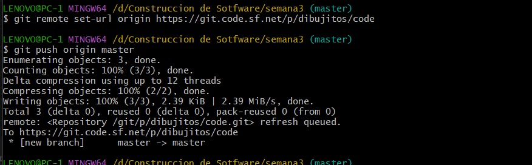

Aprende a utilizar Git con SourceForge paso a paso
1 Navegar al directorio del proyecto:
2 Inicializar repositorio Git:
3 Agregar archivos al staging area:
4 Crear commit inicial:
5 Agregar repositorio remoto (usando SSH):
6 Subir cambios al repositorio remoto:
En caso de tener problemas con SSH, se recomienda utilizar HTTPS:
Luego volver a hacer push. Se abrirá una ventana emergente solicitando usuario y contraseña. Una vez insertados, el push se completará y los archivos estarán en el repositorio.
